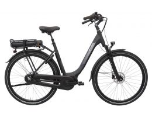
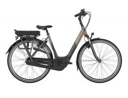
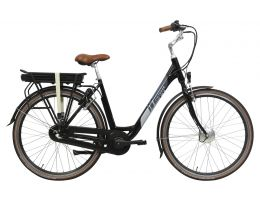
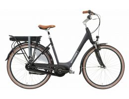

Elektrische fietsen
Home
Elektrische fietsen
Stads fietsen
Sportieve fietsen
About
Contact
Elektrische fietsen
Elektrische fiets
Brinckers Brisbane M8 2019 Dames

Gazelle Orange C7+ HMB 2019 Dames

Victesse Magnum N3 HF LTD Lage Instap

Cortina E-Octa Dames
